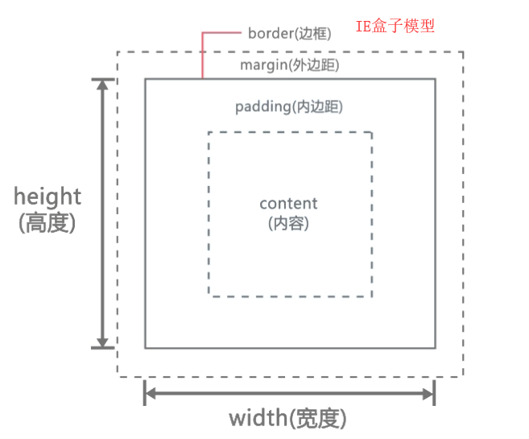

原文连接:https://www.cnblogs.com/dashucoding/p/10692997.html
盒子模型
- 盒子模型的概念
- 高和宽的设置
- 边框的设置
- 内边距的设置
- 外边距的设置
- 盒子的计算
- 元素显示的方式
盒子模型：
border边框，margin外边距，padding内部距，content内容，width宽度。
高度：
height: 长度值|百分比|auto
最大高度:
max-height: 长度值|百分比|auto
最小高度:
min-height:长度值|百分比|auto
边框的属性：
边框宽度：border-width
边框颜色：border-color
边框样式：border-style
边框属性：
border- left | right | top | bottom -width
border ... -color
border ... -style

content+padding = ie

doctype html 声明
display属性
inline显示内联元素，元素前后没有换行符
block显示块级元素，元素前后有换行符
内联元素使用width和height属性有效。
inline-block行内块元素。
ie 盒子模型和标准 w3c 盒子模型
inline-block 行内块元素，元素呈现为inline,具有block相依特性,none元素不会被显示。
css文本样式：
text-align设置元素内文本的水平对齐方式。
text-align:
left|right|center|justify
style="text-align:left;"
div{text-align:center;} <div><img src=""/></div>文字基线：
line-height属性
设置元素中文本行高
语法：
line-height:长度值|百分比
浏览器有默认的行高，不同浏览器默认行高不一样。
word-spacing 设置元素内单词之间的间距
letter-spacing 设置元素内字母之间的间距
文字样式：字体，font-family和font-size。

文字粗细：
font-weight:normal|bold|bolder|lighter|100到900
文字样式：
font-style:normal|italic|oblique
水平对齐：
text-align: left|right|center|justify
背景，列表
背景图片重复问题：
设置元素的背景图片重复方式：
background-repeat: repeat | no-repeat | repeat-x | repeat-y背景图片显示方式：
设置元素的背景图片的显示方式：
background-attachment: scroll | fixedscroll: 默认值，背景图片随滚动条滚动
fixed:当页面的其余部分滚动时，背景图片不会移动
背景图片定位：
设置元素的背景图片的位置：
background-position:百分比|值|top|right|bottom|left|center
列表：
list-style-position: inside | outside
css中的float
float:left;
float:right;
float:none;
float:inherit;
浮动变块状元素，浮动能环绕效果。
定位css
标准流，定位，浮动
浮动的问题如何解决
手动给父元素添加高度
通过clear清除内部和外部浮动
给父元素添加overfloat属性并结合zoom:1使用
给父元素添加浮动
css中的position
css背景与列表
css背景样式
background-color:设置元素的背景颜色
background-image:把图像设置为背景
background-position:设置背景图像的起始位置
background-attachment:背景图像是否固定或者随着页面的其余部分滚动
background-repeat:设置背景图像是否重复以及如何重复
background：背景属性设置
css列表样式
list-style-type:设置列表项标志的类型
list-style-image:将图像设置为列表项标志
list-style-position:设置列表中列表项标志的位置
list-style:简写
背景样式
设置背景颜色和背景图片
背景颜色，设置元素的背景颜色
background-color:颜色 | transparent
背景图片
设置元素的背景图片
background-image: url | none
背景图片重复
background-repeat: repeat | no-repeat | repeat-x | repeat-y
背景图片显示的方式
设置元素的背景图片的显示方式
background-attachment: scroll | fixed
scroll:随着滚动条滚动，fixed:背景图片不会移动
背景图片定位
background-position: 百分比 | 值 | top | right | bottom | left | center
background: background-color background-image background-repeat background-attachment background-postion
列表项，list-style-type:关键字 | none
list-style-image: url | none
list-style-position : inside | outside
list-style: list-style-type list-style-position list-style-image
div, ul, li, dl, dt, dd, img
html,css,javascript关系
html是网页内容的载体，css样式是表现，javascript是行为。
css优先级
行内样式>内部>外部
css选择器
标签选择器，全局选择器，类选择器，群组选择器，id选择器，后代选择器
群组选择器
链接伪类
:link 未访问
:visited 已经访问
:hover 鼠标悬停
:active 激活
css继承和层叠
从父元素那继承部分css属性
css层叠可以定义多个样式
选择器的权重
标签选择器1
类和伪类10
id选择器100
通配符0
行内样式1000
这种声明高
id不要滥用，适当使用class
css导入式@import 外部css样式
css字体和文本样式
文字：字体，字体大小，颜色，加粗等
文本：行高，对齐方式，文本修饰等
字体：font-family
文字大小：font-size
文字颜色：font-color
文字粗细：font-weight
文字样式：font-style: normal | italic | oblique
水平对齐：
text-align: left | right | center | justify
css中的浮动
float: left | right | none | inherit 继承
css中的position
position: static | relative | absolute | fixed | inherit
使用z-index要有position: absolute
盒子模型：
盒子模型概念，内边距设置，高和宽的设置，边框的设置，外边距设置，盒子的计算，元素显示的方式。
border-width: thin | medium | thick
border-color: 颜色 | transparent
display: inline | block | inline-block | none
结言
好了，欢迎在留言区留言，与大家分享你的经验和心得。
感谢你学习今天的内容，如果你觉得这篇文章对你有帮助的话，也欢迎把它分享给更多的朋友，感谢。
作者简介
达叔，理工男，简书作者&全栈工程师，感性理性兼备的写作者，个人独立开发者，我相信你也可以！阅读他的文章，会上瘾！，帮你成为更好的自己。长按下方二维码可关注，欢迎分享，置顶尤佳。
感谢！承蒙关照！您真诚的赞赏是我前进的最大动力！
这是一个有质量，有态度的公众号
喜欢本文的朋友们
欢迎长按下图关注订阅号
收看更多精彩内容